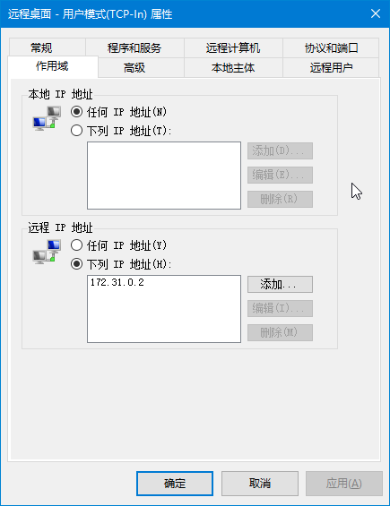

打包 Windows 镜像¶
警告
打包和维护 Windows 镜像非常麻烦并且很难 debug，快跑！！！
You have been warned. Run!!!
由于 Proxmox VE 上的虚拟机使用 cloud-init 进行定制，并且 Windows 和 Unix 一套体系完全不在一个频道上，所以制作可以用 cloud-init 即使只是简单定制的 Windows 镜像也非常折腾。下面让我们一起来受罪吧！
一、准备虚拟机¶
安装虚拟机¶
学校买了正版的 Windows 10，可以在软件正版化网站上下载，建议选中文版（因为是面向用户的）。旁边的 KMS 注册文件不用下载，实际只需要一行命令就能解决，后面会提到。
同时也要下载 VirtIO Windows 驱动，选 Stable ISO。
- 创建一个虚拟机，选择一个 ID 和名称
- OS 页面注意在右边的 Guest OS 正确选择 Windows 10
- System 页面勾上 Qemu Agent，将 SCSI Controller 改为 Default
- 硬盘总线选 SATA，存储和容量自定，推荐 32 GB 就够，除非你还要额外安装软件（建议别自找麻烦）
- CPU 内存按需分配，4 核 8 GB 算高配了
- 网卡接在 vmbr1 上（也就是用户内网），不然后面还有麻烦
- 最后的确认页面先不要勾选 Start after created，创建完成后去添加一个串口设备（Serial 0），后面会用到
和一般的虚拟机安装过程一样，将 ISO 添加为 CD/DVD Drive，跟着安装程序走完流程即可，版本请选择教育版。
第一次重启后进入 Windows 的 OOBE，现在可以在后台把光驱换成 VirtIO 的驱动盘了。
Windows OOBE¶
OOBE 阶段可以自行配置，不过既然是要用作面向用户的模板，选择一些设置时稍微考虑一下。
地区语言当然是中文了，键盘微软拼音（这是默认，下一步），然后一路到创建账户这里会有个错误提示码 OOBEAADV10，忽略掉它创建一个本地账户，命名为 Vlab，密码留空（不然后面要你填三个安全问题，WTF?）。
错误码 OOBEAADV10
这是 Windows 在尝试连接到 Azure Active Directory 时报的错，因为这个时候只有 IPv6 网络是通的（有 SLAAC），用户内网没有 DHCP。
位置服务、广告标识符这个页面全部关掉，Cortana 也别开，都是些浪费时间和资源的东西。
到这里就差不多进入桌面了，目前为止没有太多坑，除了密码必须留空之外（嗯，这种地方要求填安全问题是个奇怪的设定）。
二、配置虚拟机¶
暂停 Windows 更新¶
不然网络通畅后开始自动更新了，后面你就麻烦了
设置网络¶
右键点击右下角的网络图标，打开“网络和 Internet”设置，在下面选择“更改适配器选项”，打开“以太网实例 0”的属性，再选中 Internet 协议版本 4，在这里指定一个临时的 IPv4 地址（参考打包容器的流程），掩码是 255.255.0.0，网关是 172.31.0.1，DNS 服务器和网关一样，确定完成后就能上网了。
不要直接在“设置”应用里改
“设置”里直接改的时候，指定静态 IPv4 的时候就没有 IPv6 自动配置了。
激活 Windows¶
右键点击左下角的 Windows，打开一个有管理员权限的 PowerShell 窗口，配置学校的 KMS 激活：
slmgr.vbs /skms kms.ustc.edu.cn
现在可以进设置应用里查看激活状态了。如果还没激活的话，点疑难解答，等它跑完就会告诉你已激活。
安装 VirtIO 驱动¶
打开光驱运行 virtio-win-guest-tools.exe，一路下一步安装即可。
这里唯一的坑点是，如果你在创建虚拟机时没有多一步添加一个串口设备的话，那么 VirtIO 串口驱动就不会安装，需要关机加好设备后再重新安装。
QEMU Guest Agent (Qemu GA) 以后会很有用，我们也把它装上吧。
设置 RDP¶
设置 → 系统 → 远程桌面，启用远程桌面。
配置 Windows 防火墙仅运行来自 web 服务器的连接：
- 打开 Windows Defender 防火墙设置（开始菜单 → Windows 管理工具，或者直接运行
wf.msc） -
入站规则，找到 远程桌面 - 用户模式 (TCP-In) 启用，打开属性，切换到“作用域”选项卡，设置远程 IP 仅限
172.31.0.2，如图：
-
（可选，推荐）入站规则里“核心网络诊断 - ICMP 回显请求”四个都打开（Windows 默认
近平禁 ping，打开会方便以后调试网络和监测状态）
其他自定义设置¶
任务栏里那块巨大的胶布（搜索框）可以隐藏起来，Cortana 图标隐藏起来，Task View 的图标也可以隐藏起来，这几个都是右键任务栏就可以勾选的选项。
任务栏设置里的“使用‘速览’预览桌面”出于性能考虑建议不要开，其他随意，例如“合并任务栏按钮”可以改成“任务栏已满时”等等，其他的桌面背景、颜色、开始菜单等都随意。
开始菜单里预装的 UWP 应用现在不要动，否则后面 Sysprep 的时候会出错。（如果你特别想删掉其中的一个或多个时，第四节清理有详细说明。）
Windows 检测网络连接的功能经常坏，原因是 msftconnecttest.com 服务器在国外，很慢而且不稳定，可以修改注册表将这个功能替换成使用校内的服务。
注册表文件
Windows Registry Editor Version 5.00
[HKEY_LOCAL_MACHINE\SYSTEM\CurrentControlSet\Services\NlaSvc\Parameters\Internet]
"ActiveDnsProbeContent"="202.38.64.1"
"ActiveDnsProbeContentV6"="2001:da8:d800::1"
"ActiveDnsProbeHost"="ns.ustc.edu.cn"
"ActiveDnsProbeHostV6"="ns.ustc.edu.cn"
"ActiveWebProbeContent"="USTC Mirrors Connect Test"
"ActiveWebProbeContentV6"="USTC Mirrors Connect Test"
"ActiveWebProbeHost"="mirrors.ustc.edu.cn"
"ActiveWebProbeHostV6"="ipv6.mirrors.ustc.edu.cn"
"ActiveWebProbePath"="connecttest.txt"
"ActiveWebProbePathV6"="connecttest.txt"
"EnableActiveProbing"=dword:00000001
三、安装 Cloudbase-init¶
警告：前方雷区
下载地址 https://cloudbase.it/downloads/CloudbaseInitSetup_Stable_x64.msi，可以浏览器下载，也可以 PowerShell 命令行：
Invoke-WebRequest -Uri https://cloudbase.it/downloads/CloudbaseInitSetup_Stable_x64.msi -OutFile C:\cloudbase-init.msi
顺着 Cloudbase-init 的流程安装就行，在选择用户名的那个界面填 Administrator，下面串口设备选择 COM1，继续安装完成。最后一个界面不要选 Sysprep，直接关闭退出，等改完设置后手动处理。
安装完成后打开 C:\Program Files\Cloudbase Solutions\Cloudbase-init\conf，编辑 cloudbase-init-unattend.conf，修改以下几处：
- 确保 username=Administrator 和 groups=Administrators
- 添加一行
first_logon_behaviour=no - 删除
config_drive_raw_hhd和config_drive_vfat（或者改成 false 也行） - 从
metadata_services里删掉其他配置，只保留一个ConfigDriveService。注意这是一个逗号分隔的列表，不要看错了 - 将
check_latest_version改成 false
参考：修改后的文件内容
[DEFAULT]
username=Administrator
groups=Administrators
inject_user_password=true
first_logon_behaviour=no
config_drive_cdrom=true
bsdtar_path=C:\Program Files\Cloudbase Solutions\Cloudbase-Init\bin\bsdtar.exe
mtools_path=C:\Program Files\Cloudbase Solutions\Cloudbase-Init\bin\
verbose=true
debug=true
logdir=C:\Program Files\Cloudbase Solutions\Cloudbase-Init\log\
logfile=cloudbase-init-unattend.log
default_log_levels=comtypes=INFO,suds=INFO,iso8601=WARN,requests=WARN
logging_serial_port_settings=COM1,115200,N,8
mtu_use_dhcp_config=true
ntp_use_dhcp_config=true
local_scripts_path=C:\Program Files\Cloudbase Solutions\Cloudbase-Init\LocalScripts\
check_latest_version=false
metadata_services=cloudbaseinit.metadata.services.configdrive.ConfigDriveService
plugins=cloudbaseinit.plugins.common.mtu.MTUPlugin,cloudbaseinit.plugins.common.sethostname.SetHostNamePlugin,cloudbaseinit.plugins.windows.extendvolumes.ExtendVolumesPlugin
allow_reboot=false
stop_service_on_exit=false
四、打包前的清理工作¶
-
启用 Windows Update
可以放在最后一步关机前再启用，避免后面清理时间太长导致 WU 开始运行，或者直接断网也行。
-
清理 Windows 资源管理器的历史记录
按 Windows + E 打开 Windows 资源管理器，删掉所有“最近文件”。注意不是将文件从磁盘上删除，而是右键“从快速访问中删除”。
-
清理“运行……”的历史记录
清空（不是删除）注册表项
HKEY_CURRENT_USER\Software\Microsoft\Windows\CurrentVersion\Explorer\RunMRU中的所有内容。 -
清理浏览器记录
对于 Internet Explorer：请参考 Microsoft Docs（中文 / English)
对于 Microsoft Edge：删除目录
C:\Users\Vlab\AppData\Local\Microsoft\Edge\User Data -
进行磁盘清理
打开“此电脑”，右键点击 C 盘选择“属性”，然后在对话框中找到“磁盘清理”选项。先点击左下角“清理系统文件”，然后勾选全部内容确认清理。
-
关闭休眠和快速启动（推荐）
以管理员打开 PowerShell，运行
powercfg /h off。 -
（可选）删除预装的 UWP 应用
这是高级操作，建议仅当你熟悉 Windows 10 时进行
以管理员打开 PowerShell，运行
Get-AppxProvisionedPackage -Online来列出当前系统中已预装的 UWP 应用。对于每一个想要删除的应用，记录下 PackageName。继续在 PowerShell 中，运行
Remove-AppxProvisionedPackage -Online -PackageName $PackageName，其中$PackageName替换成刚才记录下来的 PackageName。删除预装后，也要同时删除当前用户已安装的这一份相同应用。你可以使用Remove-AppxPackage -PackageName $PackageName命令，也可以直接在开始菜单中找到它选择“卸载”（如果你找得到的话）。作为练习，你可以选择删除 Microsoft Solitaire Collection 和 Skype 这两个应用，或者选择跳过这一步。
五、Sysprep 和打包¶
先关机打一个快照
Sysprep 后的镜像无法恢复，因此我们推荐在这一步之前将虚拟机关机，在 Proxmox 的界面中打一个快照，方便以后以当前状态为基础进一步定制镜像。
还是以管理员打开 PowerShell，定位到 C:\Program Files\Cloudbase Solutions\Cloudbase-init\conf，运行 Sysprep：
C:\Windows\System32\Sysprep\sysprep.exe /generalize /oobe /unattend:Unattend.xml
这个 Unattend.xml 由 Cloudbase-init 提供，所以需要先 cd 到上述目录。
如果 Sysprep 出现错误，请检查 C:\Windows\System32\Sysprep\Panther\setupact.log 并利用 Google 排查。
不正确地卸载预装的 UWP 应用会导致 Sysprep 失败
setupact.log 中能看到以下错误信息，以 Microsoft Solitaire Collection 为例：
Package Microsoft.MicrosoftSolitaireCollection_4.10.7290.0_neutral_~_8wekyb3d8bbwe was installed for a user, but not provisioned for all users. This package will not function properly in the sysprep image.
请回到第四节正确卸载错误信息给出的软件包。
Sysprep 运行完成后 Windows 会自动关机，此时就不要再开机了，把当前版本的虚拟机镜像提取出来，就算打包完成了。你也可以选择直接将这个虚拟机转换为 Template，就可以直接从它创建出新虚拟机了。
提取虚拟机镜像¶
首先请参考打包容器镜像对应的一节激活虚拟机对应的 LVM 卷。
提取虚拟机的快照
如果你想提取虚拟机的某个快照，而不是其当前状态，需要在 lvchange 命令中额外添加 -Ky 参数。
lvchange -ay -Ky /dev/{vg}/{snap-lv}
然后，使用 QEMU 的磁盘工具将存储在 LVM 中的原始（raw）磁盘镜像提取出来：
qemu-img convert -p -f raw -O qcow2 /dev/{vg}/{lv} win10.qcow2
此时 win10.qcow2 就可以使用了。它的容量通常在 20 GB 以上，可能还不够方便移动，下面提供一种简单的优化方法。
优化虚拟机镜像¶
Linux 下对 NTFS 文件系统写入没有很好的优化，容易损坏文件系统，因此请将上一步提取得到的 qcow2 文件作为另一个虚拟磁盘挂载进 Windows 虚拟机，从 Windows 中操作。
-
删除页面文件和交换文件
打开刚挂载的磁盘中的系统分区（它的盘符现在应该不是 C 了，注意辨别），删除
pagefile.sys和swapfile.sys。你也可以同时清空
C:\Windows\Logs和一些其他文件夹，但这通常是不必要的，它们不会清理出几十 MB 的容量。 -
对文件系统执行 Trim
再次以管理员身份打开 PowerShell，执行以下命令：
Optimize-Volume -DriveLetter X -ReTrim -Defrag -SlabConsolidate -Verbose（如果命令运行得太慢了，你可以去掉
-SlabConsolidate参数。）
以上任务完成后，关闭 Windows 虚拟机并解除挂载硬盘，然后再次转换并压缩镜像：
qemu-img convert -p -c -f qcow2 -O qcow2 win10.qcow2 win10-new.qcow2
此时的 win10-new.qcow2 容量应该能缩减至 10-12 GB，可以保存作为正式镜像了，刚才的 win10.qcow2 也可以删除或覆盖掉了。